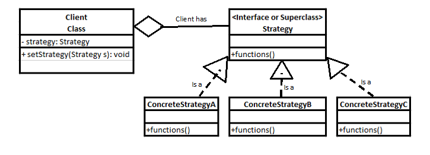

OO Designs
Was recently taking an Object Oriented Software development class. In the spirit of ‘Learning Out Loud’ I figured the design patterns would be an interesting blog series.
Educators
My primary source for this is a college course. Suggested reading includes…
- Object-Oriented Design and Patterns, 2nd edition, Horstmann, John Wiley & Sons, 2005. ISBN: 978-0-471-74487-0
- Head First Design Patterns, Freeman, O’Reilly Media, 2004. ISBN: 978-0596007126
Strategy Design
First up, we’ll look into Strategy Design
This design is good for situations when you have an action that could be performed different ways.
Think of guards in a video game. They have the Patrol function. But different guards may patrol in different ways, or need to change how the patrol.
- Follow a set path through an area.
- Randomly patrols an area. Randomly turning when he walks into something
- Intensely investigate an area.
- Chase
A guard could start off patrolling a set path, but what if he see’s the game hero? We’d need him to change to Chase. And then when the hero successfully hides, the guard should switch to Intensely investigate.
With the Strategy Design we can change a guard’s patrol strategy whenever we want.
Let’s look at the UML.

In our example, the Client Class is Guard.
They have a Strategy object, through which we perform the Patrol() function.
Follow a Path, Randomly Patrol, Intensely Investigate, and Chase would each be a separate ConcreteStrategy.
Each ConcreteStrategy would have separate code for its Patrol() function.
- Random Patrol’s Patrol() function would randomly choose a direction to walk in.
- Chase’s Patrol() function would move the guard directly toward the hero.
- etc.
So the guard’s strategy object would start
Strategy strategy = new FollowAPath();
After they see the hero, we would then change strategy.
strategy = new Chase();
Now the guard can continue using
strategy.Patrol();
But the guard’s actions have now changed.
And that’s the basics of the Strategy Design Pattern